DISEÑO DE NIVEL
Siempre que un videojuego venía con una herramienta para crear tus propios mapas o escenarios, pasaba mucho más tiempo haciendo eso que jugando al propio juego. Algunas de estas herramientas eran superficiales con poca flexibilidad y profundidad de edición, pero otras te permitían mayor alcance creativo.
La herramienta con la que más trabajo es el Valve Hammer Editor, que me permite crear mapas o niveles para videojuegos que corran en el motor gráfico Source. La intenté aprender a utilizar varias veces, pero solo recientemente fue cuando finalmente pude desarrollar las ideas que se me ocurrían.
El proyecto que más tiempo le puse fue una recreación deL Complejo Belgrano, donde fui la secundaria, para el videojuego Counter-Strike Global Offensive.
A continuación, algunos imágenes de este proyecto.
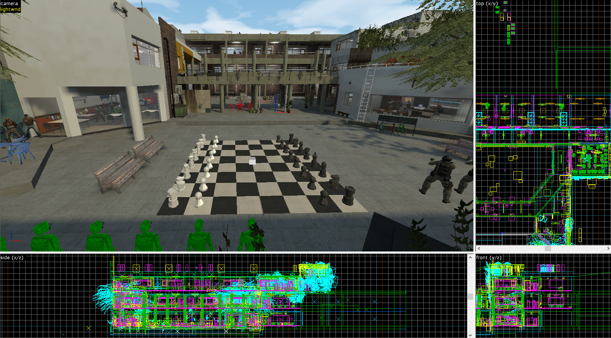 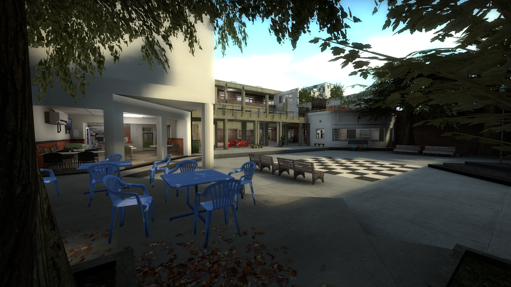 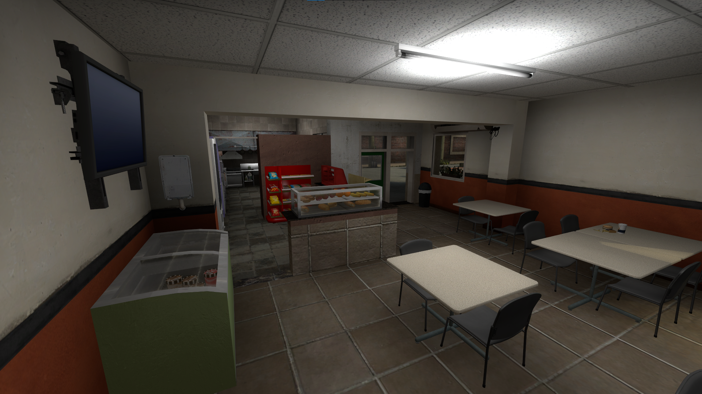 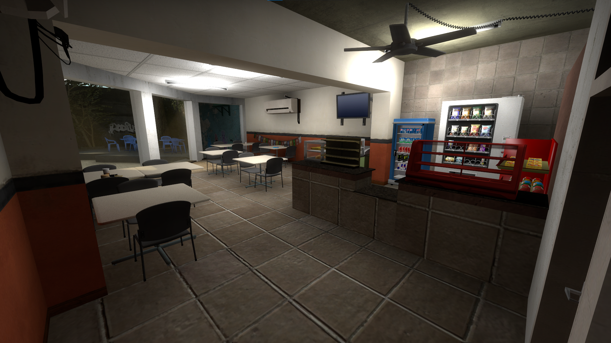 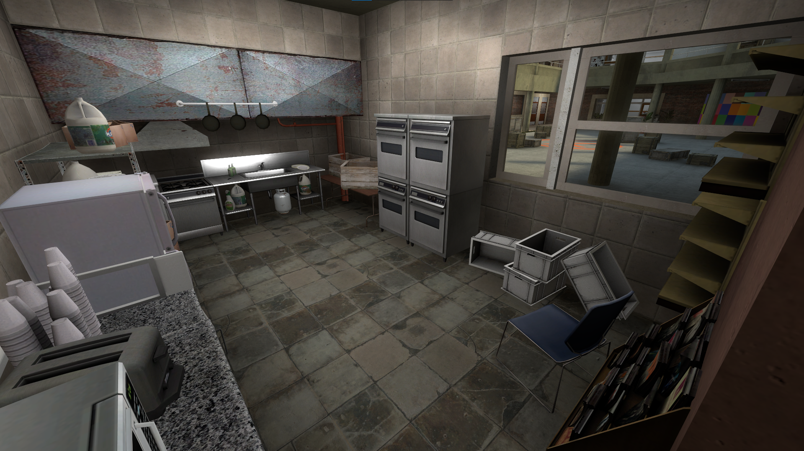 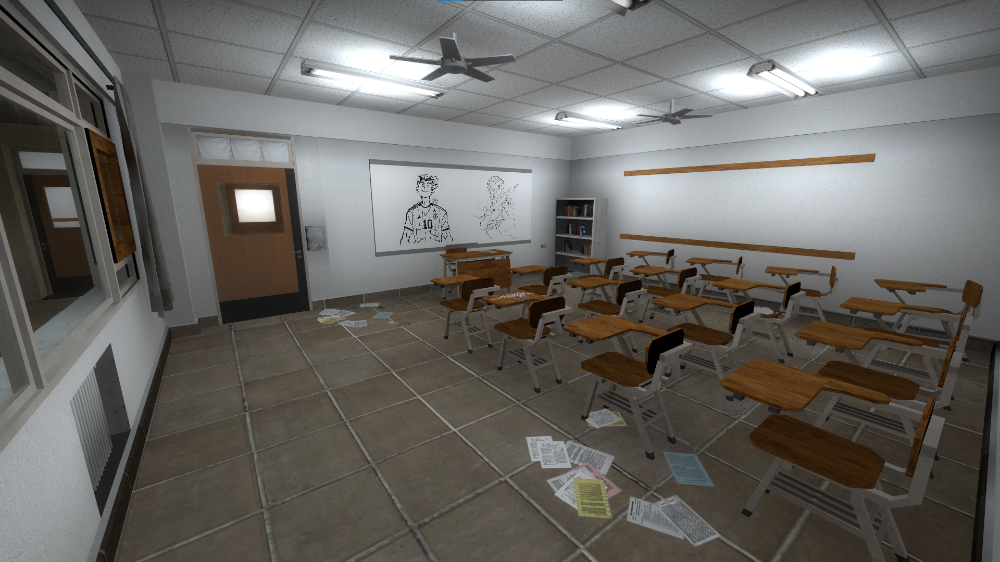 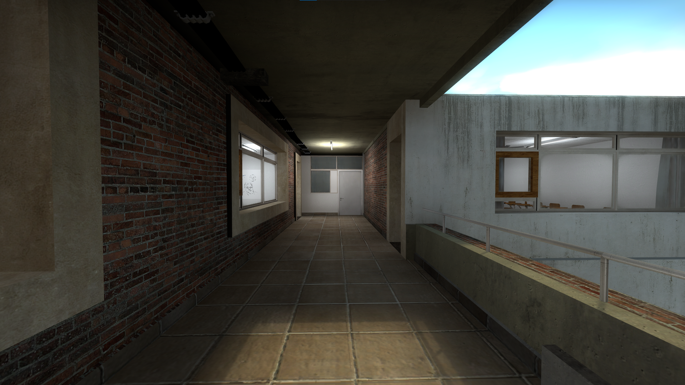 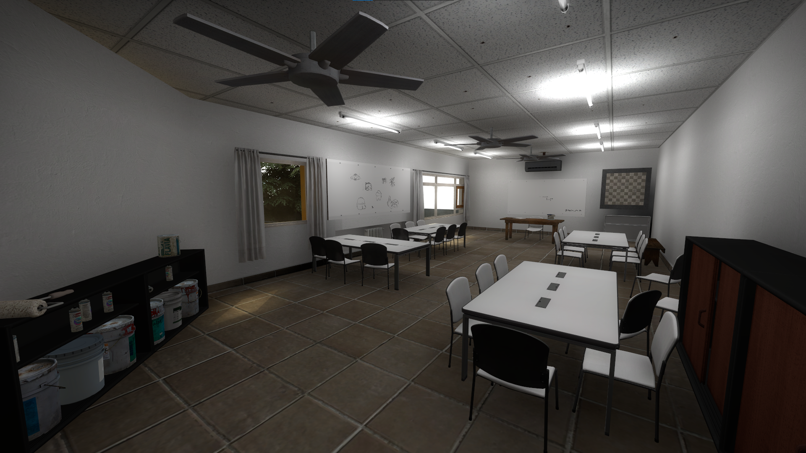 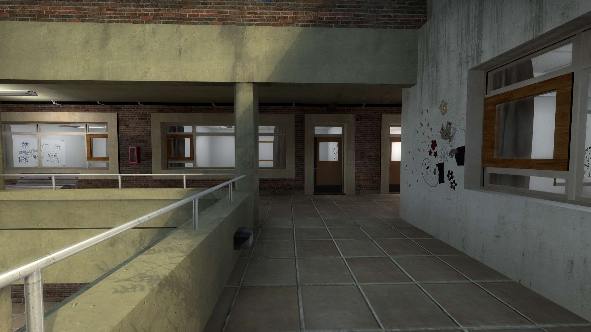 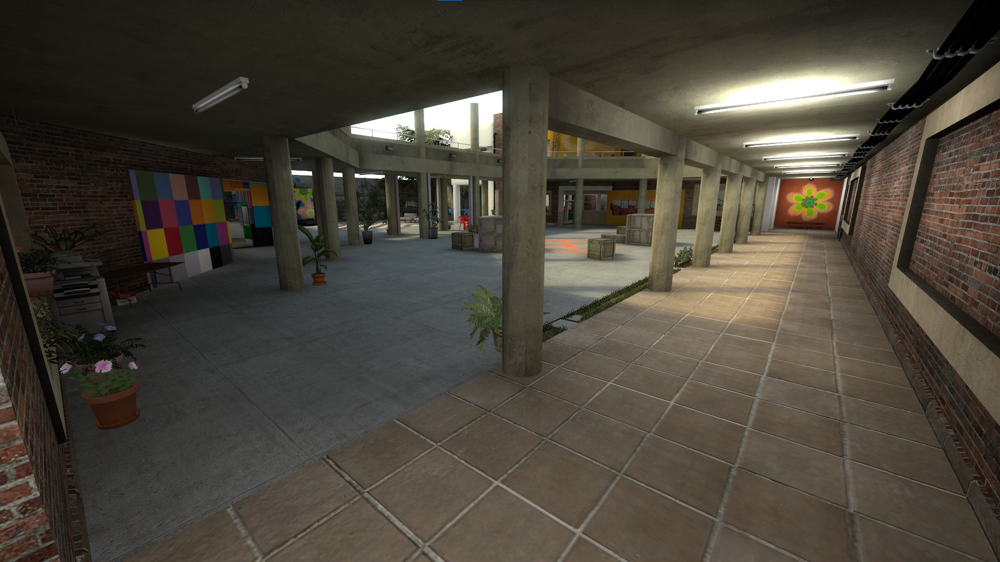 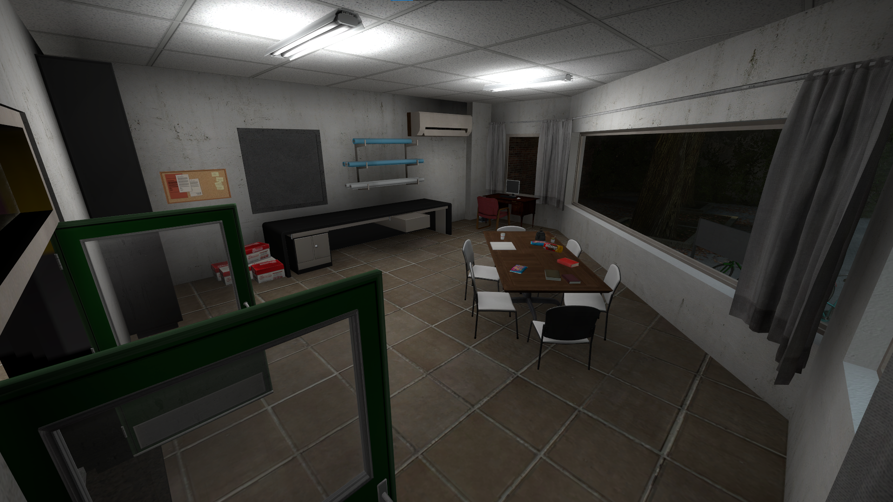 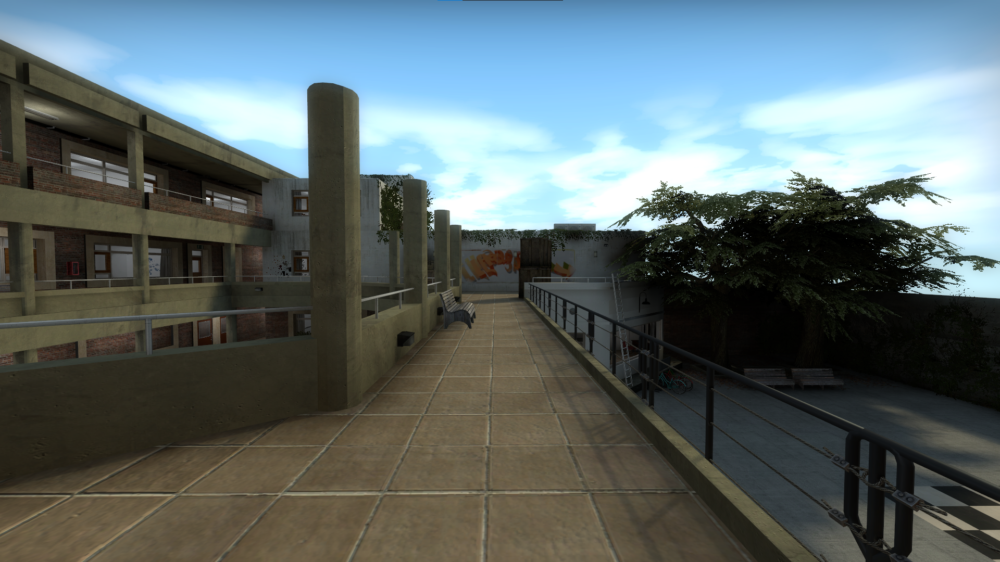 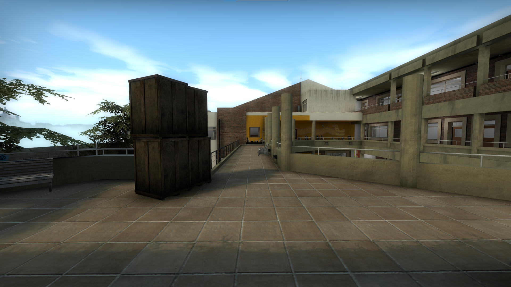 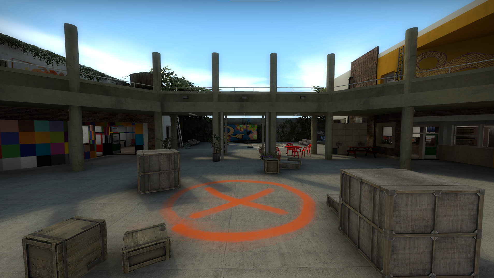 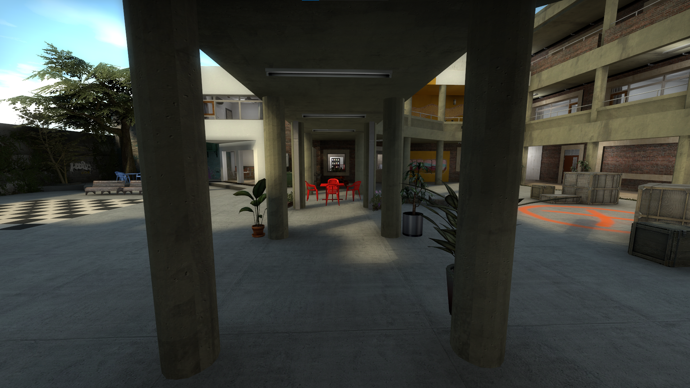 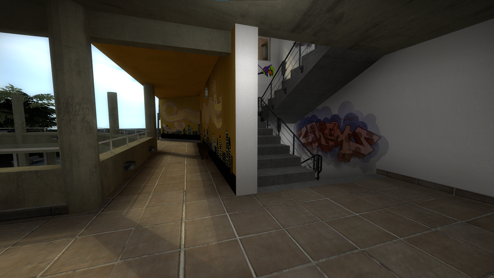 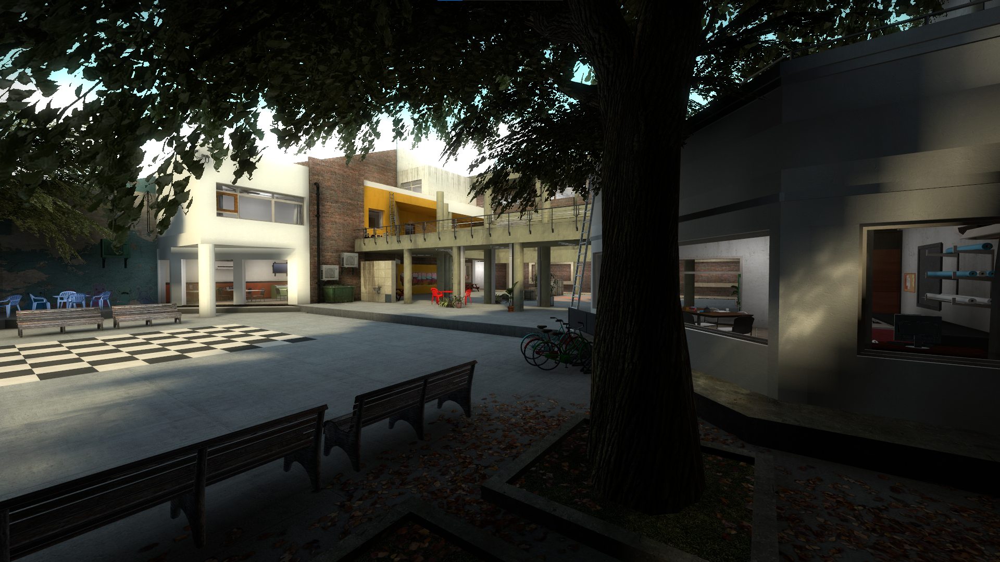